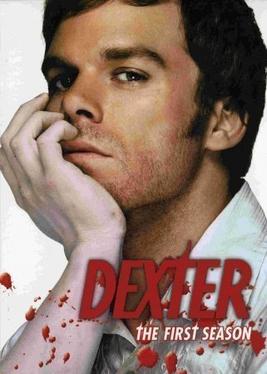

1.Évad
Dexter múltját és kettős életét ismerjük meg. Miközben Miami utcáin gyilkolja azokat, akik megúszták az igazságszolgáltatást, egy rejtélyes ellenfél, az "Ice Truck Killer" próbálja meg kihívás elé állítani.
Bővebben
2.Évad
Dexter hulláit felfedezik az öbölben, és a rendőrség elindítja a "Bay Harbor Butcher" néven ismert gyilkos utáni hajtóvadászatot. Eközben Dexternek egy FBI-ügynökkel és egy zaklató barátnővel is meg kell küzdenie.
Bővebben